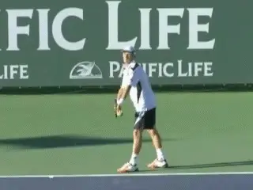
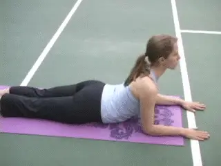
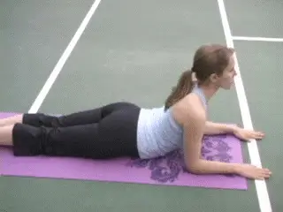
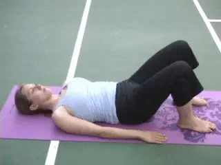
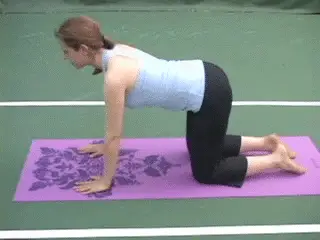
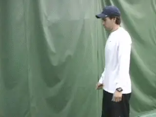
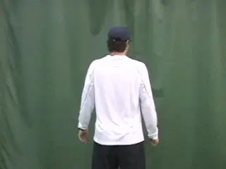
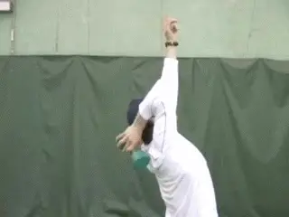
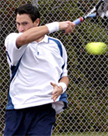

The Kick Serve: Part 4: Prehabilitation¶
Chris Lewit¶
Prehabilitation means regular flexibility and strength training.
In the first article on the kick serve, I presented the technical reference points (link) for developing the motion. The second article covered drill progressions for all the variations. link Then in the third article we discussed the various controversies regarding teaching and hitting the kick and detailed 5 common errors I see in trying to develop the motion. (link.)
Now in this final article, I want to present the last critical component in my system. This what I call my prehabilitation program, something I use with my students everyday at my academy. Prehabilitation has two parts: flexibility training and strength training.
In my opinion a dual training program of this type is critical for keeping the back and shoulders healthy and strong for high performance players - or any player - who wants to develop the kick as part of the offensive repertoire of a complete server.
So this article presents over 20 exercises drawn from a wide range of disciplines and training methodologies synthesized into a original training program that I believe will produce awesome results for any player.
I truly believe that we have become so conservative and cautious in teaching the kick serve that our players are often disadvantaged technically and tactically when they get to the world-stage. American players often don't develop sufficient serving heaviness and/or angled placements. At the highest levels of competition, these seemingly subtle technical and tactical differences can separate a top 100 player from top 10.

The kick serve adds subtle strategic advantages that can make a competitive difference.
I remain cautiously optimistic that with more sport science study, the myth of the dangerous kick serve will be debunked, and American coaches will start teaching this serve to our young future champions. So let's get into the nitty-gritty of the prehabilitation program I have created for my students.
Schedule¶
The prehabilitation exercises increase both flexibility and strength in the critical areas of the body for the kick. Some do both simultaneously. They are part of a larger, full-body stretching and workout program that my students regularly perform---something I recommend for all competitive players.
I like to see my students stretching working on these exercises daily---but a minimum of 3 times a week. Every player and coach can integrate them how they see fit in their own training. But as a starting point I'd recommend picking 10 exercises and doing one set of multiple reps. Then over time, increase the number of exercises, the number of sets, and the number repetitions.
I believe that the students in my kick serve system are on the road to learning world-class kick serves, but more importantly, the stretching and strengthening part of the system is the insurance policy to protect them from any potential injury. Sometimes injuries are unavoidable, especially out on the rigorous junior or professional circuit. But my players tend to be more resilient because of the extra attention we pay to prehabilitation rather than rehabilitation; they recover faster from injuries and have fewer missed tournaments. I hope you get a chance to experiment with incorporating some of what I have presented into your own training regimes, and let me know what you think.
Note: Special thanks to my wife Kimberleigh Weiss-Lewit, and my student Hannah Shteyn for their great help in doing the demonstrations!Flexibility and Strengthening Exercises
Upward Facing Dog

This yoga stretch opens up rib cage and increases the flexibility of back. Also increases core strength.
Wheel

This yoga exercise stretches the back stretch and opens the shoulders.
Bridge
The stretch opens the chest and stretches the back.
Advanced Bridge
The Advanced Bridge gives an even deeper stretch of the chest and the back.
The Full Wheel

The full wheel is a complete back and shoulder stretch.
Forward Bend to Plow
Another yoga exercise that stretches the spine and opens the back.
Cat Pose

This a yoga shoulder stretch.
Beginner Back Stretch
Use this to stretch the back before or after serving.
Beginner Chest and Arm Stretch

This is a great basic exercise to stretch the chest and arms.
Shoulder Stretches

This stretch increases the range of motion of the buttscratch--the key position in developing the kick.
Beach Ball Stretch
This stretch is a great way to prepare the back and shoulders for serving.
Dumbbell Triceps Extension

This strengthens the triceps and to a lesser extent the shoulder, thereby reinforcing proper kick serve technique.
Boat
This increases the range of motion in the shoulder to create a deeper buttscratch. Can also be transformed into a strengthening exercise for the triceps by resisting against the upward
snap.
¶
